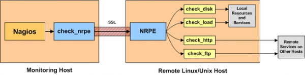

NRPE (Nagios Remote Plugin Executor) 讓 Nagios 得以透過 agent 將 commands 執行在被監測的機器上，並取得結果。

Figure 1. 架構圖（圖片來源：Nagios Exchange - Nagios Exchange）
其中 Monitoring Host 上裝有 NRPE plugin，Remote Linux/Unix Host 裝有 NRPE server，如此一來 Nagios 就可以透過 check_nrpe 將某個 command 交由遠端的 agent 來執行。
由於 command 是執行在被監測的機器上，再加上 NRPE server 可以限定哪些 IP 可以跟它打交道（allowed_hosts），這種做法會比 “為了 monitoring 而特別在機器上打洞“ 的做法來得恰當，也不用額外考量安全性的問題。
|
|
雖然透過 NRPE 從機器內部做事情相對比較不受限制，但也不是每一種監測都適合從機器內部做。 |
延伸閱讀
參考資料
文件